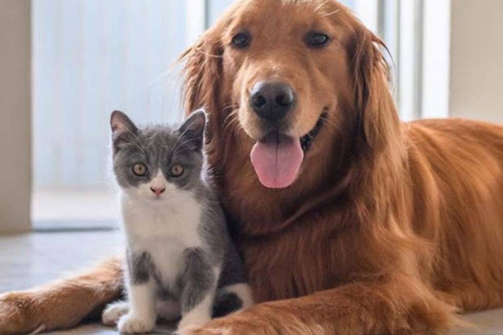
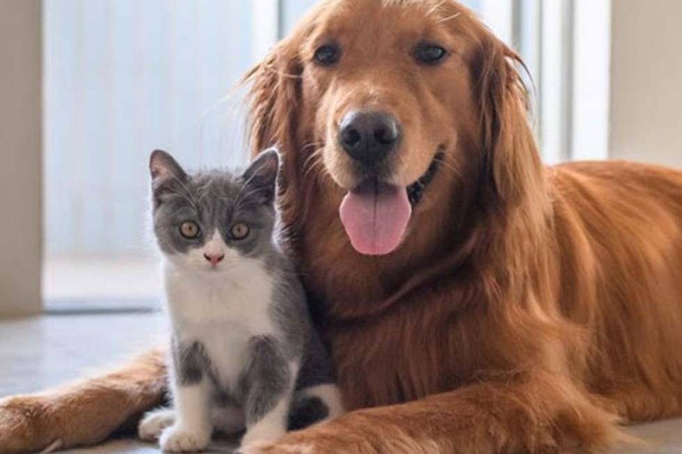

nuestra mision es el ayudar a los animales y darles el amor que se merecen, nos honramos en ayudar y cuidarlos cuando tu no puedas por aquello que no puedan cuidarlos por el trabajo o necesitan salir de viaje y tambien nos gusta convertir perros en grandes compañeros de vida con los que puedes confiar que te van a querer, respetar y cuidar.
nuestra vision es un mundo donde todos los animales tengan una buena salud y grandes cuidados para lleven una vida digna con buenos cuidados y mucho cariño por eso a parte de ofrecer los buenos servicios para mascotas tambien rescatamos a animales de la calle para ayudarlos y buscarles una familia que si los quiera.
 
